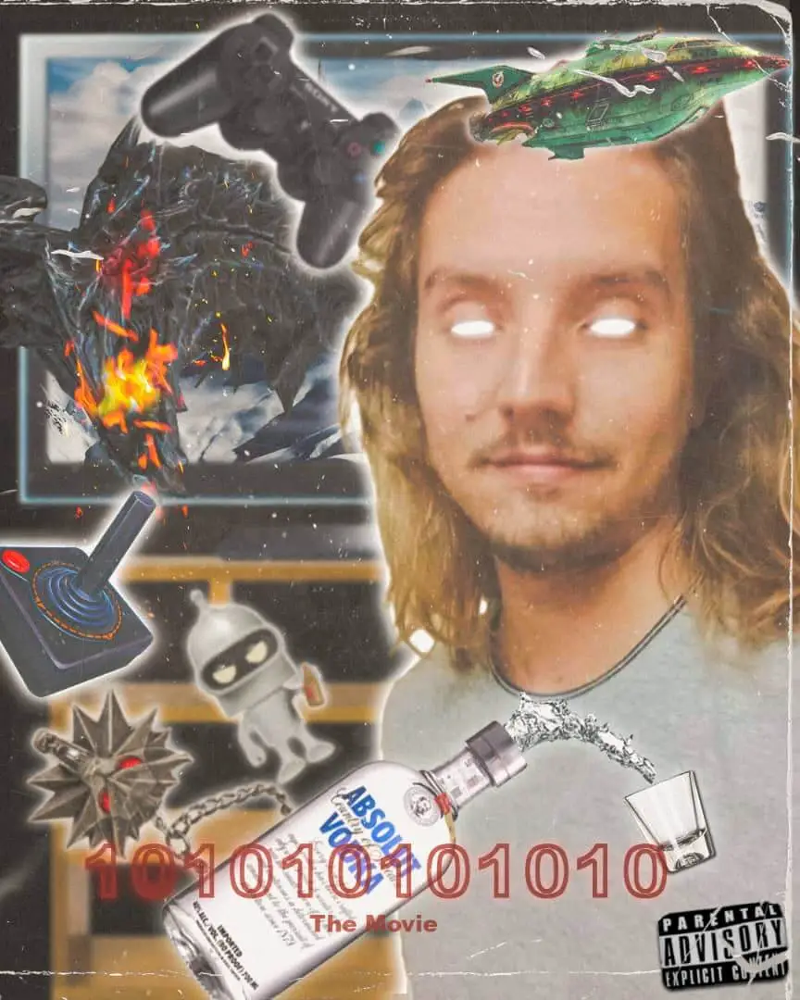
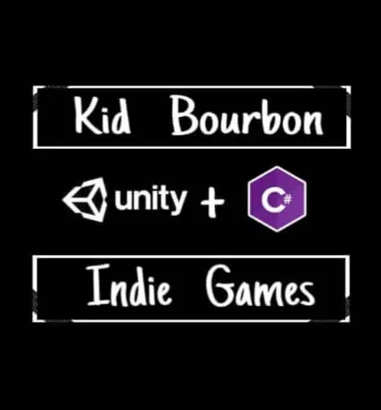
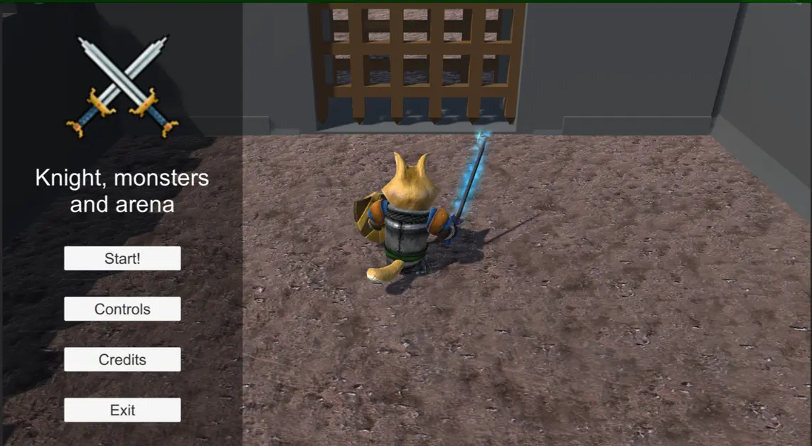
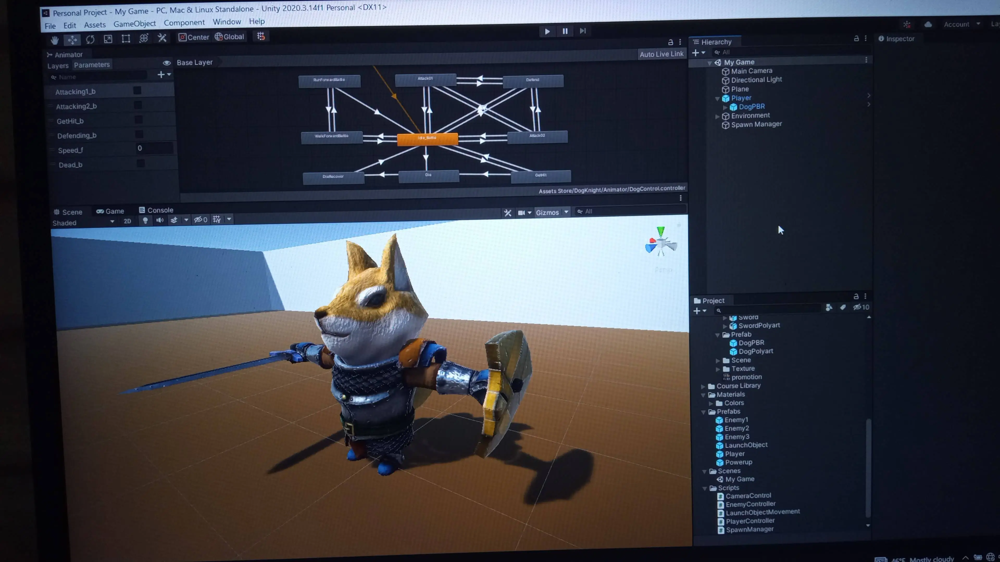
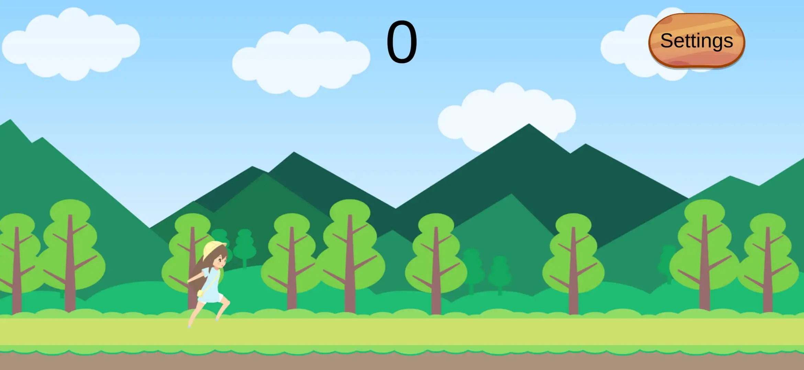
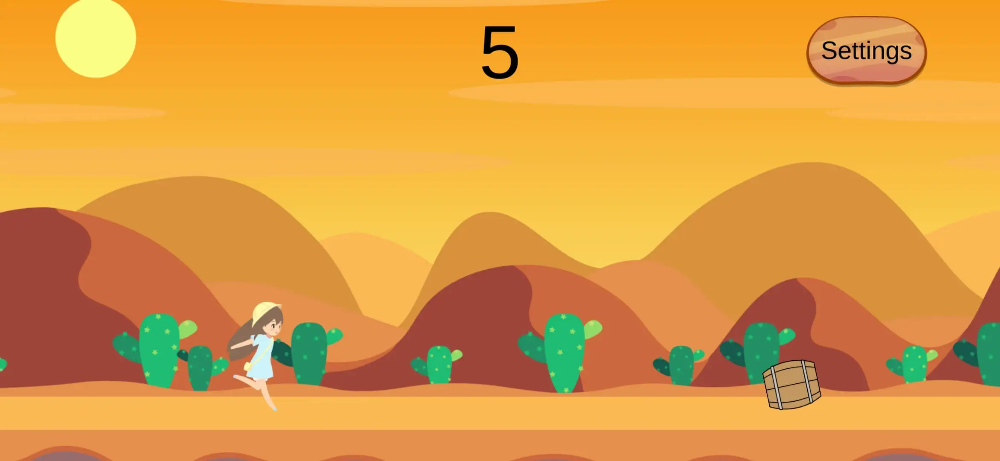
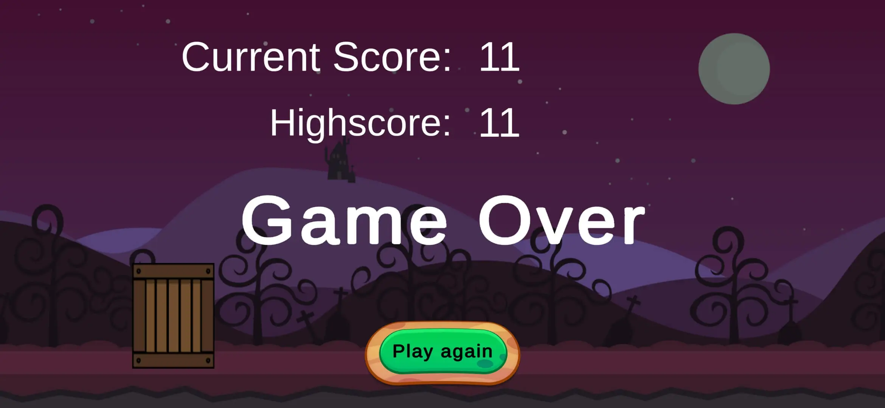
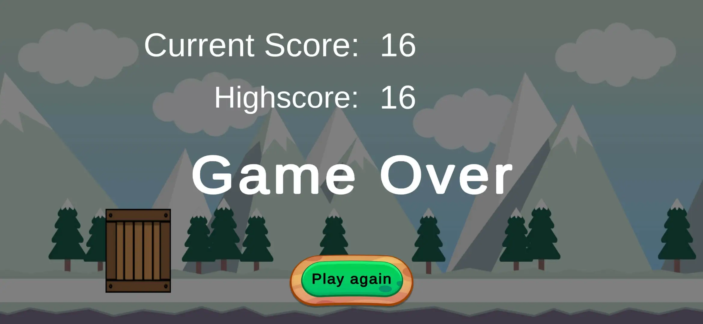

<!DOCTYPE html>
<html lang="en">
  <head>
    <title>KidBGames</title>
    <meta charset="UTF-8">
    <meta http-equiv="X-UA-Compatible" content="IE=edge">
    <meta name="viewport" content="width=device-width, initial-scale=1.0">
    <link rel="shortcut icon" href="images/favicon.png" type="image/x-icon">
    <link rel="stylesheet" href="css/fonts.css">
    <link rel="stylesheet" href="css/desktop/desktop.css">
    <link rel="stylesheet" href="css/tablet/tablet.css" media="(max-width: 769px)">
    <script src="js/kit.fontawesome.com_552ebddad2.js"></script>
  </head>
  <body></body>
</html>
<main>
  <section class="profile">
    <h2 class="profile__name">Kid Bourbon</h2>
    <h3 class="profile__title">Game and Web Developer</h3><a class="profile__button" href="#">Follow</a>
    <div class="statistic--profile">
      <div class="statistic_element">
        <h3>12k</h3><span>Followers</span>
      </div>
      <div class="statistic_element">
        <h3>1.7k</h3><span>Following</span>
      </div>
      <div class="statistic_element">
        <h3>48</h3><span>Articles</span>
      </div>
    </div>
    <div class="profile__minibio">
      <h2>About me</h2>
      <h3>Junior game developer with Unity and junior front-end developer with HTML, CSS and JS.</h3>
    </div>
    <div class="location--profile"><i class="fas fa-map-marker-alt"></i>
      <div class="location__distance">
        <h2>Cuba</h2>
        <h3>82km Near</h3>
      </div>
    </div>
    <div class="gallery">
      <h2>My Photos</h2>
      <div class="gallery__all-photos"></div>
    </div>
  </section>
  <aside class="articles">
    <div class="article"><span class="article__category">Playstation</span>
      <h2 class="article__title">Moonlighter: A Gem in the PlayStation Plus Lineup</h2>
      <p class="article__description">Moonlighter presents a unique gameplay experience where players take on the role of Will, a shopkeeper. Will’s goal is to make a living by managing his shop and satisfying customers. Each day, players stock the shelves, interact with customers, catch thieves, and negotiate prices. With the profits earned, players can expand the store and even establish additional shops in the village.</p>
    </div>
    <div class="article"><span class="article__category">Switch</span>
      <h2 class="article__title">Nintendo Updates Pikmin 4 To Version 1.0.1</h2>
      <p class="article__description">Pikmin 4 isn't out on the Switch yet, but Nintendo has already released a new update ahead of its launch later this week. Preorders and preloads for Pikmin 4 are also live on the Switch eShop. It will take up about 10.4GB of space. If you have preinstalled the game, your own copy should already be on Version 1.0.1.</p>
    </div>
    <div class="article"><span class="article__category">Xbox</span>
      <h2 class="article__title">Final Fantasy XIV Online Coming to Xbox</h2>
      <p class="article__description">During the Final Fantasy XIV Fan Festival, Xbox head Phil Spencer announced that Final Fantasy XIV Online will finally be available on Xbox Series X|S in the Spring of 2024. This news was well-received by fans of Xbox and Square Enix, who hope that it signifies a positive future for the relationship between the two companies.</p>
    </div>
  </aside>
</main>